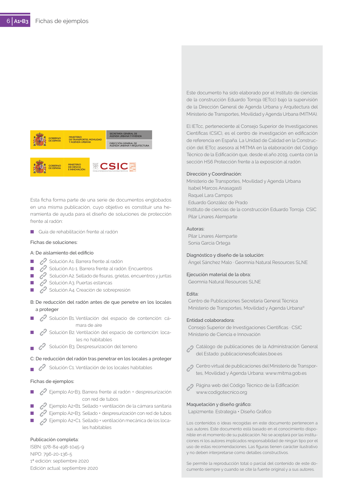

<!doctype html>
<html lang="es"><head><meta charset="utf-8">
<meta name="viewport" content="width=device-width, initial-scale=1">
<title>GUIA · sección HS6 Protección frente a la exposición al radón.</title><link rel="stylesheet" href="../estilo.css">
</head><body>
<nav><a href="../index.html">Índice</a> › <a href="../doc/guia-pdf-75560417d686-2019-b82cfb6da594.html">GUIA</a> › a0018</nav>

<header class="meta">
<p><a href="../doc/guia-pdf-75560417d686-2019-b82cfb6da594.html">GUIA</a> · sección HS6 Protección frente a la exposición al radón. · versión 2019 · capa guia</p>
</header>
<div class="cita"><strong>Cita:</strong> GUIA · ID técnico a0018 · sección HS6 Protección frente a la exposición al radón. · páginas físicas pág. 6 (impresas: ['6'])</div>
<p>Formatos: <a href="../../contenido/docs/GUIA-PDF-75560417d686/2019__b82cfb6da594/apartado/a0018__seccion-hs6-proteccion-frente-a-la-exposicion-al-radon.json">JSON compacto</a> · <a href="../../contenido/docs/GUIA-PDF-75560417d686/2019__b82cfb6da594/apartado/a0018__seccion-hs6-proteccion-frente-a-la-exposicion-al-radon.md">Markdown</a> · <a href="../../contenido/docs/GUIA-PDF-75560417d686/2019__b82cfb6da594/fuente.pdf">PDF fuente</a></p>
<p><a href="../doc/guia-pdf-75560417d686-2019-b82cfb6da594.html">Ámbito del documento</a> · <a href="../doc/guia-pdf-75560417d686-2019-b82cfb6da594.html#ambito">texto del ámbito</a> ·
<a href="../doc/guia-pdf-75560417d686-2019-b82cfb6da594.html">documento y tablas</a></p>
<nav><a href="guia-pdf-75560417d686-2019-b82cfb6da594__a0017.html">← 6. EFECTIVIDAD</a></nav>
<h1>sección HS6 Protección frente a la exposición al radón.</h1>
<p>Tipo: tablas, figuras · nivel 2 · sección estimada: 6. EFECTIVIDAD · padre: a0017</p>
<pre class="literal">sección HS6 Protección frente a la exposición al radón.
Dirección y Coordinación:
Ministerio de Transportes, Movilidad y Agenda Urbana
Isabel Marcos Anasagasti
Raquel Lara Campos
Eduardo González de Prado
Instituto de ciencias de la construcción Eduardo Torroja  CSIC
Pilar Linares Alemparte
Autoras:
Pilar Linares Alemparte
Sonia García Ortega
Diagnóstico y diseño de la solución:
Ángel Sánchez Malo · Geomnia Natural Resources SLNE
Ejecución material de la obra:
Geomnia Natural Resources SLNE
Edita:
Centro de Publicaciones Secretaría General Técnica
Ministerio de Transportes, Movilidad y Agenda Urbana©
Entidad colaboradora:
Consejo Superior de Investigaciones Científicas · CSIC
Ministerio de Ciencia e Innovación
 
Catálogo de publicaciones de la Administración General
del Estado: publicacionesoficiales.boe.es
 Centro virtual de publicaciones del Ministerio de Transpor­
tes, Movilidad y Agenda Urbana: www.mitma.gob.es
 Página web del Código Técnico de la Edificación:
www.codigotecnico.org
Maquetación y diseño gráfico:
Lapizmente. Estrategia • Diseño Gráfico
Los contenidos o ideas recogidas en este documento pertenecen a
sus autores. Este documento está basado en el conocimiento dispo­
nible en el momento de su publicación. No se aceptará por las institu­
ciones ni los autores implicados responsabilidad de ningún tipo por el
uso de estas recomendaciones. Las figuras tienen carácter ilustrativo
y no deben interpretarse como detalles constructivos.
Se permite la reproducción total o parcial del contenido de este do­
cumento siempre y cuando se cite la fuente original y a sus autores.
Esta ficha forma parte de una serie de documentos englobados
en una misma publicación, cuyo objetivo es constituir una he­
rramienta de ayuda para el diseño de soluciones de protección
frente al radón:
■
Guía de rehabilitación frente al radón
Fichas de soluciones:
A: De aislamiento del edificio
■
Solución A1. Barrera frente al radón
■
Solución A1-1. Barrera frente al radón. Encuentros
■
Solución A2. Sellado de fisuras, grietas, encuentros y juntas
■
Solución A3. Puertas estancas
■
Solución A4. Creación de sobrepresión
B: De reducción del radón antes de que penetre en los locales
a proteger
■
Solución B1. Ventilación del espacio de contención: cá­
mara de aire
■
Solución B2. Ventilación del espacio de contención: loca­
les no habitables
■
Solución B3. Despresurización del terreno
C: De reducción del radón tras penetrar en los locales a proteger
■
Solución C1. Ventilación de los locales habitables
Fichas de ejemplos:
■
Ejemplo A1+B3. Barrera frente al radón + despresurización
con red de tubos
■
Ejemplo A2+B1. Sellado + ventilación de la cámara sanitaria
■
Ejemplo A2+B3.  Sellado + despresurización con red de tubos
■
Ejemplo A2+C1. Sellado + ventilación mecánica de los loca-
les habitables
Publicación completa:
ISBN: 978-84-498-1045-9
NIPO: 796-20-136-5
1ª edición: septiembre 2020
Edición actual: septiembre 2020
SECRETARÍA GENERAL DE
AGENDA URBANA Y VIVIENDA
DIRECCIÓN GENERAL DE
AGENDA URBANA Y ARQUITECTURA
GOBIERNO
DE ESPAÑA
MINISTERIO
DE TRANSPORTES, MOVILIDAD
Y AGENDA URBANA
GOBIERNO
DE ESPAÑA
MINISTERIO
DE CIENCIA
E INNOVACIÓN</pre>
<h2>Tablas en estas páginas</h2><ul><li>p. 6 · <a href="../../contenido/docs/GUIA-PDF-75560417d686/2019__b82cfb6da594/tabla/p0006_t01.json">p0006_t01.json</a> · <a href="../../contenido/docs/GUIA-PDF-75560417d686/2019__b82cfb6da594/tabla/p0006_t01.csv">.csv</a></li></ul><h2>Página visual</h2><figure><a href="../../contenido/docs/GUIA-PDF-75560417d686/2019__b82cfb6da594/figura/p0006.png"></a><figcaption>Página visual 6 (fuente para fórmulas/tablas/figuras)</figcaption></figure><p class="aviso">PDF fuente redistribuible: copia fiel enlazada en esta página (SHA256 verificado).</p>
<footer>Generado estáticamente desde JSON normalizado; sin JavaScript ni servicios externos.
El JSON es la fuente; este HTML es caché reproducible.</footer>
</body></html>
